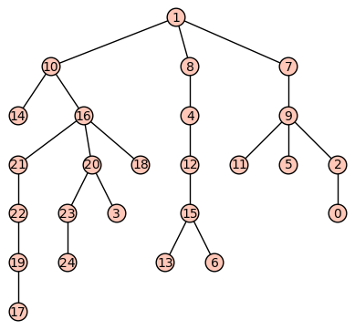

In this lesson we introduce the concept of a rooted tree. A rooted tree is a tree in which we designate one vertex to be special, the "root", and then we think of all the edges as directed and "flowing out" from the root. Most applications of trees in computer science assume that trees are rooted, and introducing the root-based heirarchy of vertices in a tree opens up several new applications to us. For example we will look at a new algorithm for finding a minimum spanning tree known as Kruskal's Algorithm.
Basic objectives: Each student is responsible for gaining proficiency with each of these tasks prior to engaging in class discussions, through the use of the learning resources (below) and through the working of exercises (also below). Note that important new terminology is given in italics.
Advanced objectives: The following objectives are the subject of class discussion and further work; they should be mastered by each student during and following class discussions.
Reading: Read Section 10.3 of your textbook, except for the longish section in the middle titled “Mathematica Implementation of Kruskal’s Algorithm”. This section goes on for several pages. (You can read that if you want, but it won’t make much sense if you don’t know the software Mathematica.) Do, however, read the section “Sage Note” near the end because it will show you how to invoke Kruskal’s Algorithm in Sage.
Video:
The following exercises are to be done during and following your reading and viewing of the resources. Work these out on paper and then enter the responses into the appropriate submission form (see Submission Instructions) by the deadline. You will receive a mark of Pass if each item response shows a good-faith effort to be right and is submitted prior to the deadline.
The exercises below refer to this tree in which 1 is the root:

And this weighted graph. The weights are superimposed on the edges:
In case you can't see the edge weights, the complete weighted edge list is: [(0, 1, 7), (0, 4, 6), (0, 5, 9), (0, 6, 10), (1, 2, 8), (1, 3, 5), (1, 4, 8), (2, 3, 5), (2, 6, 6), (3, 6, 9), (4, 5, 9), (5, 6, 6)].
Submit your responses using the form at this link: http://bit.ly/1Sp41ar